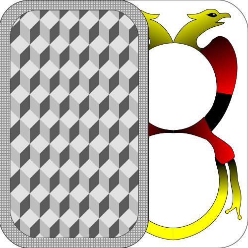
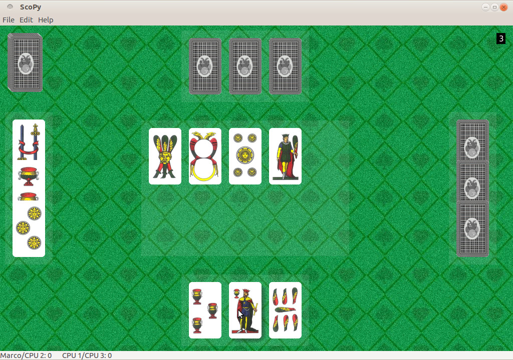
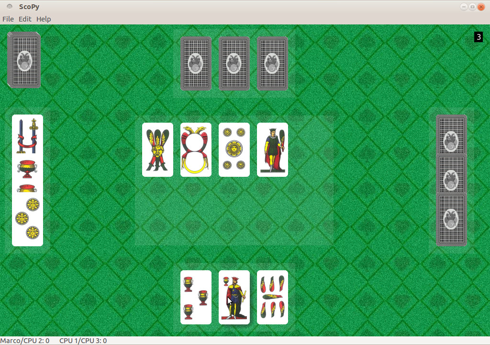
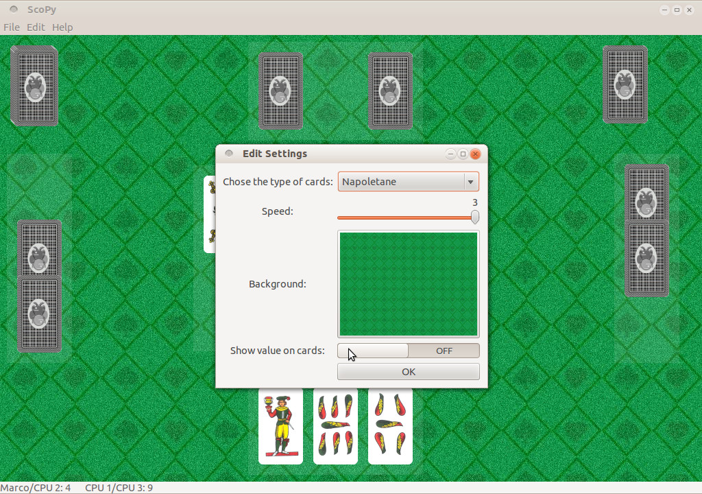
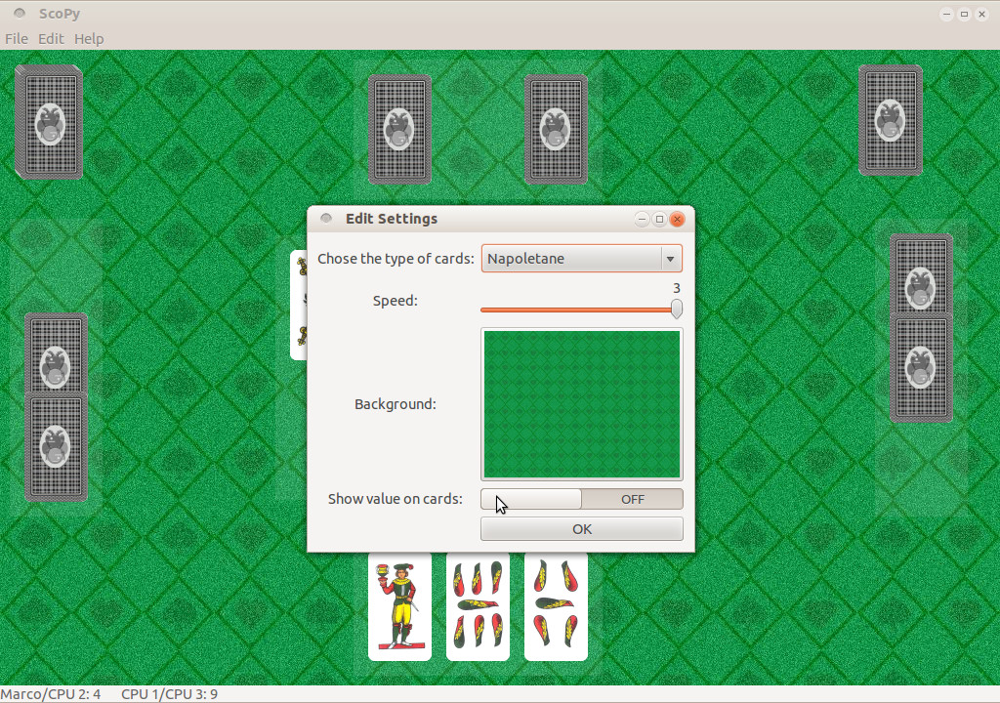

//
About

ScoPy is a software to play to the famous italian card game "scopa".
Currently you can play 1-on-1 with the computer or in four, paired with a computer.
There are 5 game variants:
- Classica
- Cirulla
- Cucita
- Re Bello
- Scopone
- Bergamasche
- Francitalia
- Napoletane
- Piacentine
- Poker
- Scartini
- Siciliane
- Toscane
- Trevisane
You can also choose from several available backgrounds or use your own image.
The game has been translated into several languages.
The software is written in Python,
it uses the GNOME's standard graphic libraries:
GTK+3,
Clutter and
cairo.
ScoPy is free software, realeased under the terms of the
GPL v3; its source code
is available on github.
Download and installation
Downlaod
ScoPy can be downloaded from sourceforge or from github. Its source code is available on github.
Installation
 GNU/Linux
GNU/LinuxScoPy can be installed on each GNU/Linux distribution that provides Python and
GTK+3. You just need to download
sources, extract them
and run:
 Debian-based
Debian-basedThe .deb packages of ScoPy are available on sourceforge and on github. They can be installed on each distribution based on debian ("wheezy" and up).
Ubuntu
ScoPy is available on Ubuntu through the project's PPAs. To install the stable version run:
sudo apt-get update
sudo apt-get install scopy
For the instable one run:
sudo apt-get update
sudo apt-get install scopy
For the daily updated version run:
sudo apt-get update
sudo apt-get install scopy
Fedora / RPM-based
RPM packages of ScoPy are available here. Thanks to Antonio Trande.
 Arch Linux
Arch LinuxScoPy is available on AUR. If you use Archlinux you know how to install it ;)
 Windows
WindowsThe last available version for Windows is the
0.0.5,
very old (there aren't animations).
It hasn't been possible to create packages of the newer versions because GTK+3 libraries aren't available
on this platform.
Screenshots
These are some screenshots:
 

 

Get involved!
There are many ways to contribute to the project:
Write code
To contribute to programming ScoPy a modest knowledge of the Python language is enough, for more information please write to scopy.software@gmail.com.
Report a bug
If you find a bug you can report it on github or send a mail to scopy.software@gmail.com.
Help translating
On launchpad.
Create new decks and backgrounds
You can send them to scopy.software@gmail.com.
Contacts
You can contact us on scopy.software@gmail.com.